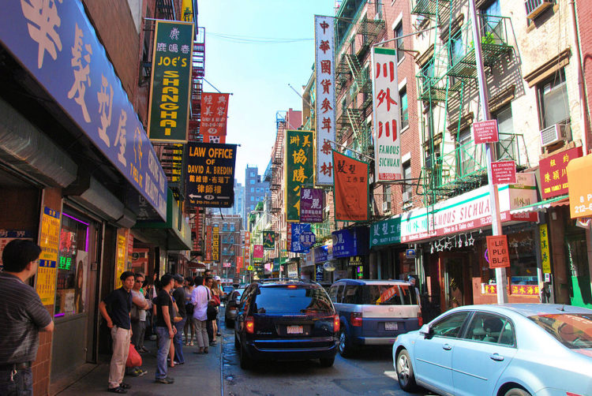

Welcome
As one of the largest and most diverse countries in the world, The United States boast an amazing amount of tourist destinations ranging from the skyscrapers of New York and Chicago, the natural wonders of Yellowstone and Alaska to the sunny beaches of California, Florida and Hawaii.
Statue of Liberty

The majestic sculpture of a woman with a torch in her hand, outstretched to heaven, became the personification of American freedom. The crown on her head has seven rays, which means seven continents and seven oceans (in Western geographic tradition). In her other hand, she holds a plate with the date of the adoption of the Declaration of Independence carved into it.
Central park

Sights of the United States are of great interest to tourists. A special place among them is occupied by New York's Central Park. It is an oasis of tranquility in Manhattan's busy business. The green area is 4 km long and 800 meters wide.
Chinatown
In Chinatown, a popular habitat for the Chinese diaspora, a stone's throw from the fashionable areas of the Big Apple, time slows down. Ethnic flavor shines through in this place in everything: traditional elements of the architecture of the Middle Kingdom, red lanterns, signs written in hieroglyphs, noisy crowds of immigrants from China, Vietnam and other Far Eastern countries.